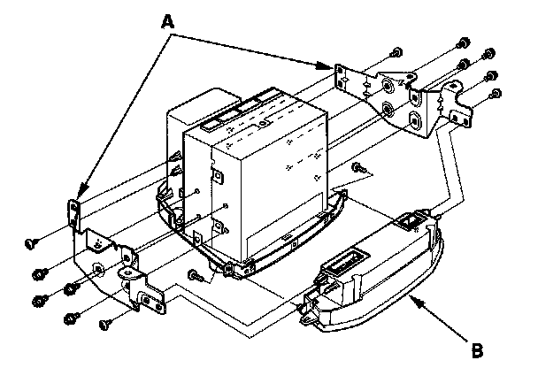

Climate Control Unit Removal/Installation
Climate Control Unit Removal/Installation1. Remove the audio unit.

2. Remove the self-tapping screws, bolt, brackets (A), and the climate control unit (B).
3. Install the control unit in the reverse order of removal. After installation, operate the various functions to see whether works properly.
4. Run the self-diagnostic function to confirm that there are no problems in the system.